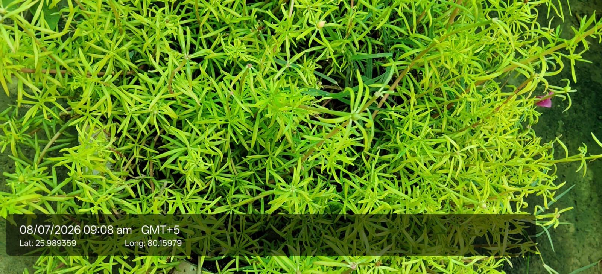
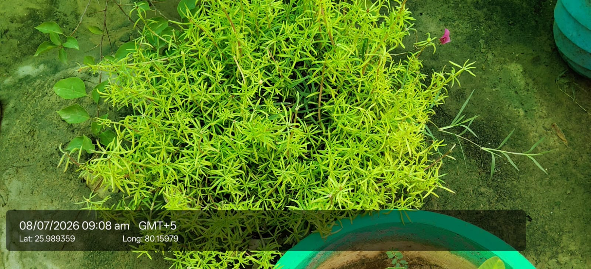

Visual record03 photographs



| Scientific name | Portulaca grandiflora |
|---|---|
| Family | Portulacaceae |
| Category | Herbs |
Habitat & Growing Conditions
- Native to South America. Widely cultivated across India
- Very common in UP including Kanpur area at your coordinates. Grown in gardens, pots, hanging baskets, and as groundcover like in your photo
- Thrives in hot, tropical to subtropical climate
- Needs well-drained soil and full sun. Very drought tolerant
- Low-growing succulent herb, 10-20 cm tall, spreading. Leaves are small, fleshy, cylindrical/needle-like, arranged in whorls. Stems are reddish and spreading. This matches your photo with the bright green needle leaves
Economic Importance
- Ornamental: One of the most popular summer bedding plants. Produces colorful flowers in red, pink, yellow, orange, white that open in morning sun. Blooms from March to November
- Attracts bees and butterflies. Spreads fast to cover bare ground
Medicinal Importance
- Leaves and whole plant used in traditional medicine for skin problems, inflammation, and as a cooling agent. Note: Consult a healthcare professional before any medicinal use
Field Notes
- Edible leaves used in salads in some places. Good for soil erosion control and xeriscaping because it needs very little water